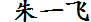

Yifei Zhu Personal informationMy research interests are in algebraic topology and related fields, particularly in its connections to algebraic geometry and number theory via objects such as formal groups, elliptic curves, and modular forms. A central theme in my research is elliptic cohomology and power operations, which combines the classical methodology of cohomological computations in algebraic topology with modern inputs from arithmetic moduli of elliptic curves in number theory. I'm an assistant professor at Southern University of Science and Technology. From 2013 to 2016, I was a visiting assistant professor at Northwestern University. I received my Ph.D. from the University of Minnesota in 2013. My advisor was Tyler Lawson. • CV Email: zyf@umn.edu PapersNorm coherence for descent of level structures on formal deformations, preprint Morava E-homology of Bousfield-Kuhn functors on odd-dimensional spheres, to appear in Proceedings of the AMS Modular equations for Lubin-Tate formal groups at chromatic level 2, submitted for publication The Hecke algebra action on Morava E-theory of height 2, submitted for publication The power operation structure on Morava E-theory of height 2 at the prime 3, Algebraic and Geometric Topology, v.14:2 (2014) PresentationsModular equations for Lubin-Tate formal groups at chromatic level 2, AMS Session on Algebraic Geometry, Joint Meetings, Seattle, 2016 Power operation calculations in elliptic cohomology, AMS Special Session on Homotopy Theory, Joint Meetings, Baltimore, 2014 TeachingMath 240, Linear Algebra, Sections 31 and 41, Spring 2016 Math 234, Multiple Integration and Vector Calculus, Sections 51 and 61, Winter 2016 Math 230, Differential Calculus of Multivariable Functions, Section 21, Fall 2015 Math 300, Foundations of Higher Mathematics, Section 73, Spring 2015 |